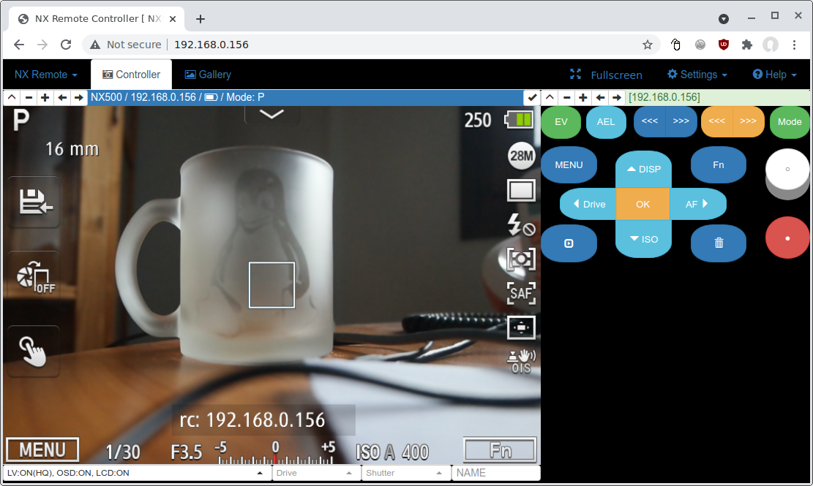

View On GitHub
ZIP
TAR
DOWNLOADS
nx-remote-controller-mod
Remote Controller Mod for NX1/NX500/NX300
Project maintained by
mewlips
Hosted on GitHub Pages — Theme by
mattgraham
nx-remote-controller-mod
Remote Controller Mod for NX1/NX500/NX300

Downloads
Latest Releases
v0.9
NX1/NX500 :
nx-remote-controller-mod-v0.9_nx1_nx500.zip
NX300 :
nx-remote-controller-mod-v0.9_nx1_nx500.zip
NX-KS2
: NX-KS2 includes nx-remote-controller-mod. (since v2.56)
Features
Remote control camera from web browsers.
Mirroring camera screen
Remote control functions
Multiple cameras control
Silent shutter on/off (NX500)
LCD on/off
Automatic Wi-Fi connection (NX300)
Telnet/FTP (NX300)
Screenshots
TODO
How To Install
Camera
NX1/NX500
Prerequisites
NX500 with firmware version 1.12 or NX1 with firmware version 1.41
nx-wake-on 1.11
with
nx-patch 5.3
Download
nx-remote-controller-mod-v0.9_nx1_nx500.zip
Unzip the 'nx-remote-controller-mod-v0.9_nx1_nx500.zip' file to root of your SD card.
Insert the SD card into your camera and power up the camera.
Wait. The installation will be completed soon.
NX300
Download
nx-remote-controller-mod-v0.9_nx300.zip
Unzip the 'nx-remote-controller-mod-v0.9_nx300.zip' file to root of your SD card.
Insert the SD card into your camera and power up the camera.
How To Use
CAUTION: DO NOT CONNECT YOUR CAMERA TO PUBLIC WIFI NETWORK.
nx-remote-controller-mod does not provide secure access.
NX1/NX500 (nx-patch)
Press the 'MOBILE' button.
Basic 'MOBILE' function replaced by nx-remote-controller-mod.
It will open the WIFI Settings app if the camera is not connected to a Wi-Fi network.
If you have a configured Wi-Fi network, the camera will be automatically try to connect to the configured Wi-Fi AP.
After the camera is connected on network, then app menu will be launched.
Make sure the camera and the PC or Mobile device are on the same Wi-Fi network.
Find IP Address of your camera from the app menu.
Open 'http://<IP address of camera>' in web browser.
NX1/NX500 (NX-KS2)
Enable Wi-Fi.
Make sure the camera and the PC or Mobile device are on the same Wi-Fi network.
Check 'Remote Ctr' on NX-KS mod menu.
Camera's IP address will be shown.
Open 'http://<IP address of camera>' in web browser.
NX300
Set up Wi-Fi connection through Email app in 'Wi-Fi' mode.
Turn off the power.
Turn on the power.
If the configured Wi-Fi connection available, then the camera's ip address will be shown on LCD.
Open 'http://<IP address of camera>' in web browser.
Known problems
'Quick View' is not working on remote screen.
'Enlarging a photo' in playback mode is not working on remote screen.
IE/Edge Browser is not well supported. (Chrome browser recommended)
Screen off on video recording feature not supported on NX300. (before the recording, turn off liveview/osd manually)
TODOs
Improve battery status (NX1 vertical grip)
Gallery with thumbnails
Android app
Supoprt more NX cameras
Related projects
Samsung NX500 and NX1 Modding
NX-KS
Samsung NX Smart Camera Hacks
nx300m-autobackup
License
AGPL-3.0